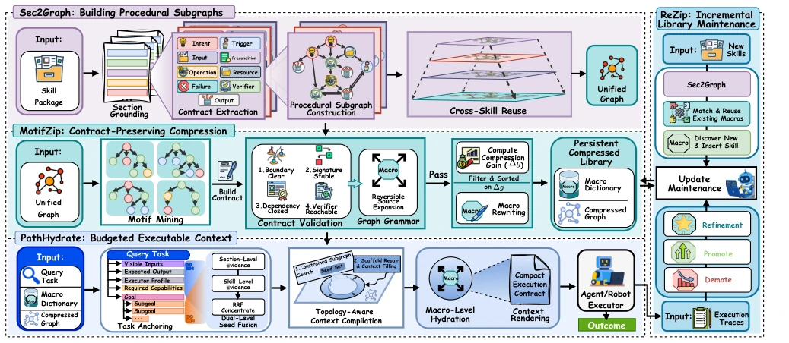
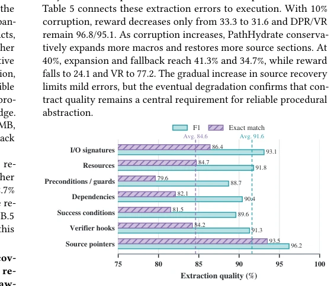
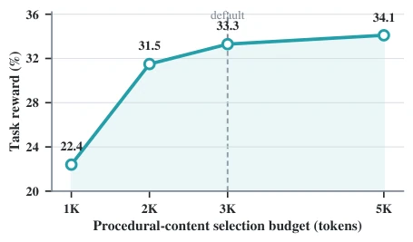
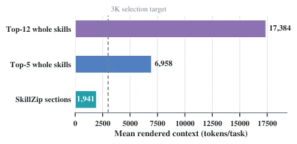
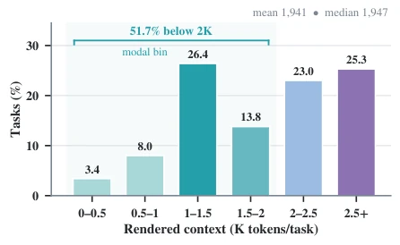
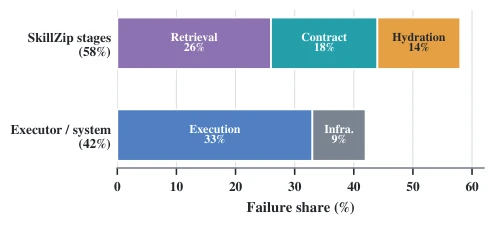

This paper introduces a "compressed package" for the Agent skill library, but unlike ordinary compression, it does not incur data loss. The core of SkillZip is to decompose skills into "contracts", compressing only those parts where interfaces, dependencies, and verifiers are all complete. This approach is quite clever, considering that previously either full loading was used, or blind compression led to execution errors. However, decomposing skills into fine-grained sections and maintaining a graph structure, isn't the overhead considerable? Moreover, relying on execution evidence to update macros (ReZip), what if the execution trajectory has noise? Although the experimental data looks quite impressive, with a 3.46x compression ratio maintaining 99% dependency, when actually deployed, is the accuracy of that "contract extraction" (Figure 3) entirely reliant on the model guessing? If the section boundaries are cut incorrectly, the entire graph collapses. Overall, it is a good solution that walks a tightrope between "context budget" and "execution reliability", but the tightrope is a bit thin.
With the expansion of LLM Agent skill libraries, the core contradiction is limited context budget, yet existing systems cannot reuse precisely. Existing work has three fatal defects: first, coarse granularity, systems like SkillDAG [1] retrieve in units of entire Skill Packages, leading to loading of large amounts of irrelevant code; second, compression breach, existing text compression methods [8, 44, 50] often lose preconditions or Verifiers, resulting in skills that are not executable after compression; third, graph construction is lagging, execution graphs are usually generated after retrieval, unable to be persistently optimized. This causes a unit mismatch of "retrieval uses package, compression uses text, execution uses graph". SkillZip aims to solve this mismatch, proposing fine-grained compression in units of "contracts" (procedural contract), ensuring skills after compression remain executable, verifiable, and traceable.
The overall process of SkillZip is divided into four steps: construction, compression, retrieval, and maintenance. First is Sec2Graph, parsing skill packages into Section nodes with type tags (e.g., Intent, Operation, Verifier), and extracting local contracts (I/O, resources, verification conditions), building source-traceable program subgraphs. Next is MotifZip, the core compression module, which uses lightweight graph grammar to mine repeated subgraphs, but only when the subgraph's boundary signatures, dependency closures, and verifier reachability are all satisfied, is it converted into reversible Macro nodes, otherwise the original text is retained. During the inference stage, PathHydrate is responsible for on-demand loading, it searches for compact subgraphs based on task anchors, and dynamically decides the rendering granularity of Macros (only name, contract, or source code), ensuring dependency closure and verifier reachability. Finally is ReZip, utilizing new skills or execution trajectories to incrementally update the library, adjusting Macro priorities or downgrading through execution evidence (e.g., verification failure, repair cost), preventing outdated abstractions from polluting the library. The entire process ensures compression is "lossless", i.e., source pointers are traceable back, execution contracts are not lost.

Figure 2: Overview of the SkillZip framework. Sec2Graph retains occurrence-specific sections and links compatible ones through canonical prototypes; MotifZip rewrites recurring contract-valid subgraphs as reversible macros; PathHydrate compiles a budgeted executable context; and ReZip updates the compressed library from new skills and execution feedback.
Tested on SkillsBench and ALFWorld, comparing Vanilla Skills, Vector Skills, GoS [24], SkillDAG [1]. SkillZip improved task reward by 6.0 points on MiniMax-M2.7, ALFWorld success rate improved by 12.2 points, significantly better than SkillDAG. In terms of compression, achieving 3.46x compression ratio, dependency retention rate 99.2%, verifier reachability rate 98.7%. Ablation experiments show that removing contract checks leads to a significant performance drop (Table 2). Figure 4 and Figure 5 show that under different budgets, SkillZip can provide more compact and effective context. Figure 7 analyzes the reasons for failure, mainly concentrated on missing verifiers or unclosed dependencies, proving the importance of contract retention.

Figure 3: Contract-extraction quality on the annotated subset. Bars show field-level F1 and exact match; dashed lines denote macro averages.

Figure 4: Task reward of SkillZip as the procedural-content selection budget varies on SkillsBench with MiniMax-M2.7. The dashed line marks the default 3,000-token budget.

Figure 5: Mean rendered context on the 1K-skill Skills- Bench library. Whole-skill comparisons render each retrieved package in full, whereas SkillZip hydrates dependency-closed sections.

Figure 6: Task-level distribution of the context rendered by SkillZip. Overall, 51.7% of tasks use fewer than 2,000 tokens, and 1,000–1,500 tokens is the modal interval.

Figure 7: Failure attribution grouped by the earliest blocking stage.